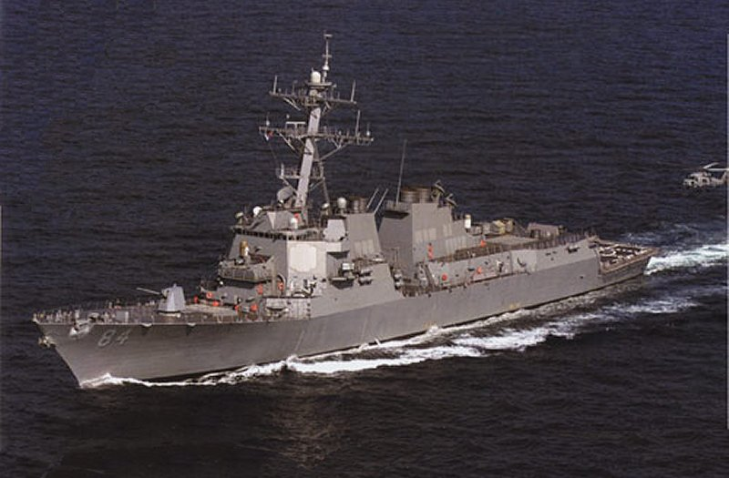
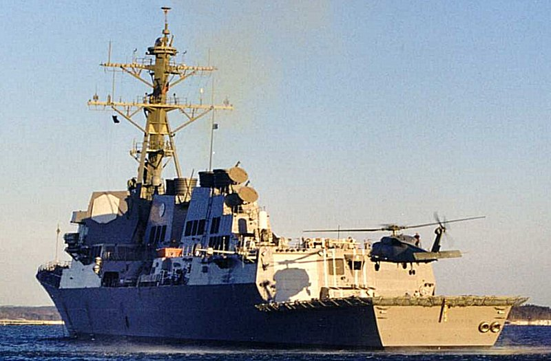
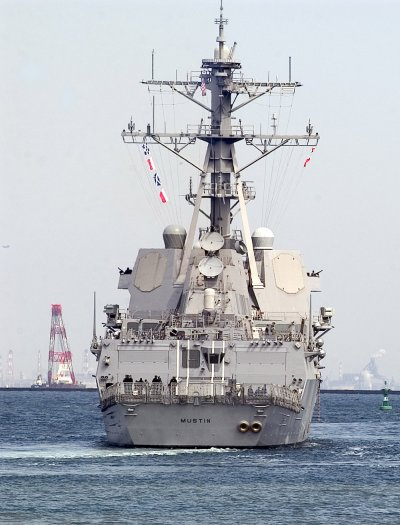
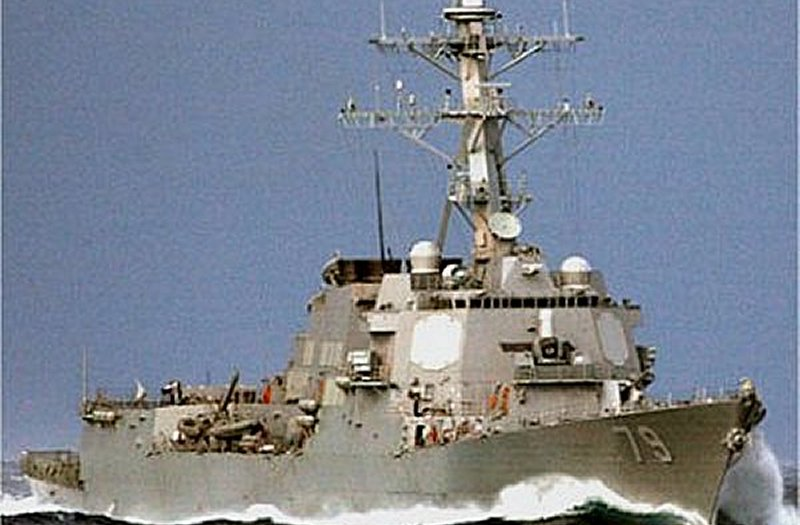
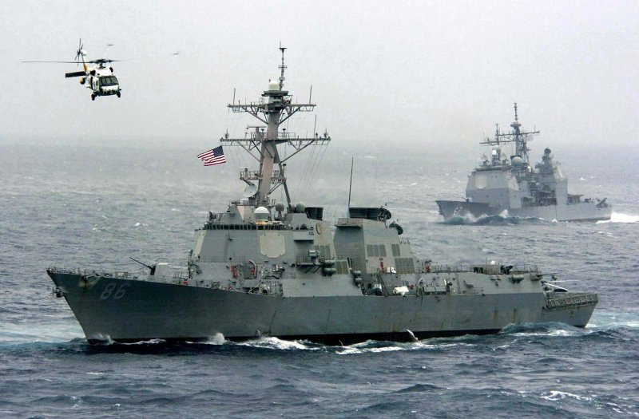
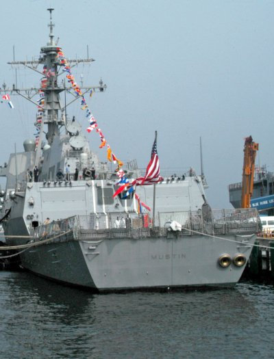
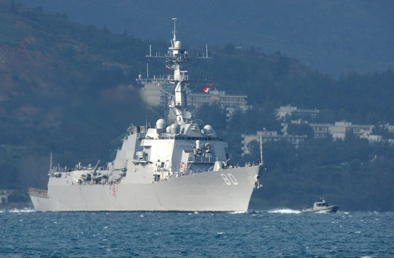
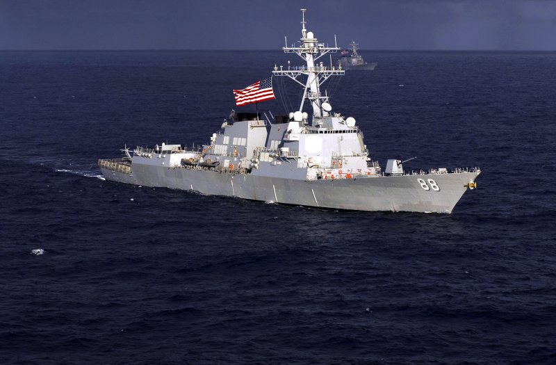

UNITED STATES ARLEIGH BURKE CLASS FLIGHT IIA DDG LAST UPDATE: May 24, 2012    
|
| SPECIFICATIONS | PHOTOGRAPHS (Click on the pictures for an enlarged photo) |
 Designation: DDG Length: 513 ft (155m) Beam: 66 ft (20m) Draft: 31 ft (9m) Displace (Full Load): 9,200 tons Propulsion: 4 GE LM2500, Gas Turbines; two shafts Speed: 31 knots Range: 4,400 nautical miles (20 knots) Crew: 370 Helicopter(s): 2 SH-60 Seahawk Sensors: - AN/SPY-1D(v) Radar - AN/SQQ-89 Sonar Suite - AN/SQQ-28v LAMPS III Armament: - 32 cell Mk-41 VLS For SM-2, Tomahawk, ESSM - 64 cell Mk-41 VLS Aft SM-2, Tomahawk, ASROC - 1 X 127mm MK-45 DP Gun - 6 X Mk-46 LW Torpedoes Ships in class: 35 + 4 building USS Oscar Austin (DDG 79), Norfolk, VAAfter building twenty-eight Arleigh Burke class destroyers to replace several existing classes of older destroyers and guided missiles cruisers in the 1980s and 1990s, the U.S. Navy embarked on a major redesign of the class in the 1990s to add hanger space on each new destroyer for two SH-60 Seahawk ASW LAMPS III helicopters. The older design Burkes had a landing pad for LAMPS III helicopters and could support them off deck, but could not house or effect any repairs to them. Many of those destroyers and frigates being replaced by the Arleigh Burke class had had hangar accomodations and it became clear that more flight deck and hangar space for ASW helicopters was needed in the destroyer fleet. The addition of the hangar space made for some other changes to the vessels as well. These included:
To date, thirty-three of these vessels have been built with another underconstruction. It is possible that even more vessels will be built depending on the status and procurement schedule for fdollow-on destroyer and crusier classes, the DDX and CGX. Arleigh Burke Flight IIA destroyers have a projected 35 year service life. |
        |


|
Jeff Head is a member of the US Naval Insitute who has many years experience in the power, defense, and computer industries. He currently works for the federal government helping maintain regional infrastructure. He is the author of a self-published military techno-thriller called, "Dragon's Fury," that projects a fictional third world war arising out of current events. Learn more about that series by clicking on the picture of the novel cover below:
 DRAGON'S FURY-World War against America and the West |
JEFFHEAD.COM Hit Counter

Jeff Head's Naval Sites Hit Counter